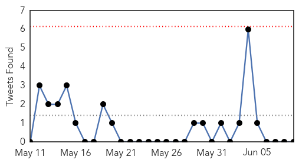
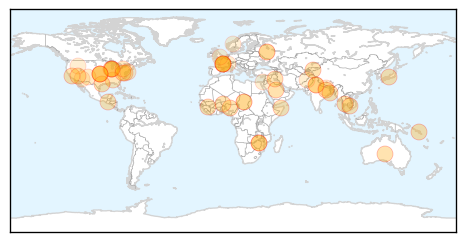
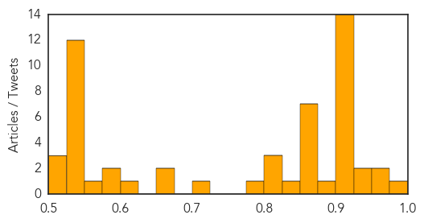
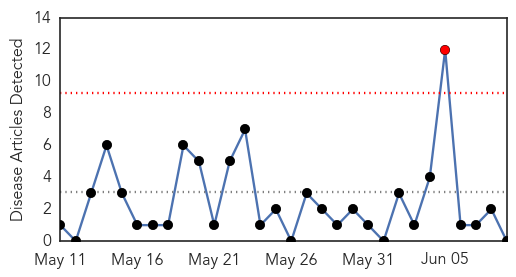

Unknown
30-Day Web Trend
3 alerts, 0 warnings

30-Day Twitter Trend
0 alerts, 0 warnings

Article Locations
Article Confidences
Top Articles:
- 0.975
- In neighbouring Bihars Muzaffarpur, toll 33 so far
- 0.957
- Global Health and Wellness News
- 0.952
- Solomon Islands diarrhoea deaths require rapid coordinated response - Solomon Islands
- 0.933
- Battling the Solomon Islands Diarrhea Outbreak
- 0.928
- US Boost For Zim’s Health Information Systems
- 0.917
- Chicago Tribune
- 0.917
- Chicago Tribune
- 0.917
- Chicago Tribune
- 0.917
- Chicago Tribune
- 0.917
- Chicago Tribune
- 0.917
- Chicago Tribune
- 0.917
- Chicago Tribune
- 0.917
- Chicago Tribune
- 0.917
- Chicago Tribune
- 0.917
- Chicago Tribune
- 0.917
- Chicago Tribune
- 0.917
- Chicago Tribune
- 0.917
- Chicago Tribune
- 0.913
- U.S. support strengthens Zim's health information systems
- 0.875
- 6 More Children Fall Sick in West Bengal
- 0.866
- Ukraine sees mutual understanding with Russia on parts of peace plan
- 0.866
- Waters of despair as floods strike Somalia refugee camp
- 0.866
- Attack on kurdish party office in north Iraq kills at least 16
- 0.866
- CAMBODIA PRESS-Government denies rumours of PM Hun Sen stroke
- 0.866
- Three people dead, two wounded in ambush attack on Las Vegas police
- 0.866
- Las Vegas police report multiple shooting, injuries
- 0.864
- More than 700 assessed for rabies exposure after Guatemalan national dies in Corpus Christi hospital last year
- 0.848
- Do You Really Need That Antibiotic?
- 0.820
- Rotavirus Vaccine May Have Prevented 177,000 Hospitalizations In Children Under 5
- 0.815
- Encephalitis kills 33 children in Bihar: Know causes and prevention
- 0.810
- Protests in Bihar as encephalitis death toll reaches 25
- 0.789
- Woman died days after taking shower in known Legionnaires' infected area, lawyer says
- 0.702
- Signs around WNY urge precaution when it comes to ticks: News
- 0.650
- Gum Disease Treatment Using the Laser-Assisted Procedure, the LANAP® Protocol is Now Available for Patients in Middletown Through Dr. Allan Ruda
- 0.650
- Rabies found in two Albuquerque bats
- 0.620
- Clearing the air around human health and air pollution
- 0.584
- Litchi syndrome kills nine children in West Bengal
- 0.577
- New wave of illegal immigrants could be bringing diseases to US
- 0.556
- Border Crisis and Disease Spark Serious Public Health Concerns
- 0.543
- 6 more children admitted to Malda hospital
- 0.541
- US sends in ‘A’ team as Iran nuclear deadline looms
- 0.541
- Pakistani Taliban claim deadly siege of Karachi airport
- 0.541
- Pakistani Taliban claim deadly siege of Karachi airport
- 0.541
- Assad declares ‘general amnesty’ for prisoners in Syria
- 0.541
- Two get life in prison for Politkovskaya murder
- 0.541
- Artist covers Paris Panthéon with hundreds of selfies
- 0.541
- Karachi airport attack: Familiar terror, target and terrorists
- 0.541
- French National Front can’t shake off ‘embarrassing’ Le Pen senior
- 0.541
- CAR troops collect weapons in disarmament drive
- 0.541
- Blood diamonds: Is the flow being stemmed?
Showing top 50 articles...
Top Tweets:
- 0.764
- Construcción de Torre de Consultorios en el Hospital de Clínicas, entra en su fase final: La construcción de l... http://t.co/3Y4BGbCydo
- 0.546
- This week (June 9-15) is Men’s Health Week. Learn about flu and other vaccines adults need http://t.co/zjOm4hTCmS
Dengue Fever
30-Day Web Trend
1 alerts, 0 warnings

30-Day Twitter Trend
2 alerts, 0 warnings

Article Locations

Article Confidences

Top Articles:
-
No articles found for Jun 09, 2014
Top Tweets:
- 0.776
- @bactiman63: Taiwan dengue and cholera cases.... http://t.co/IDoySjRBe7